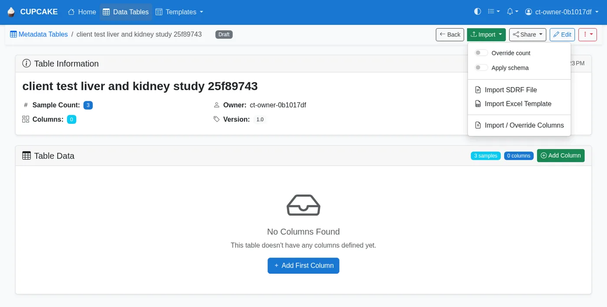
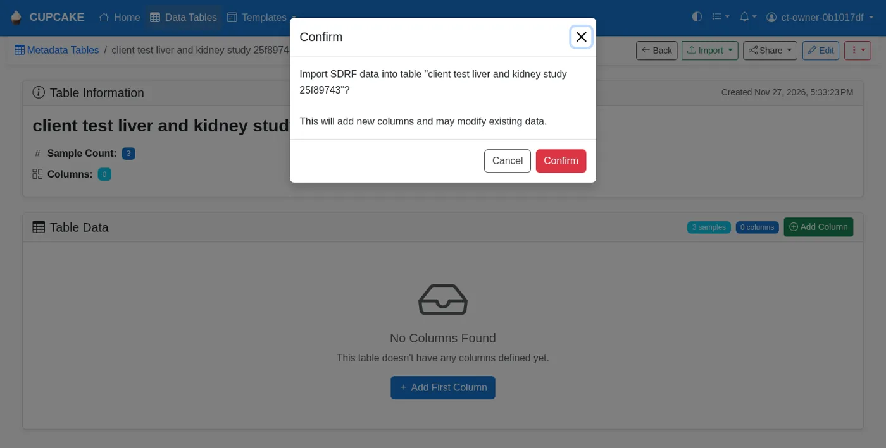
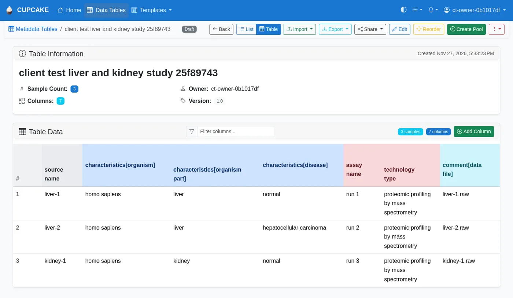
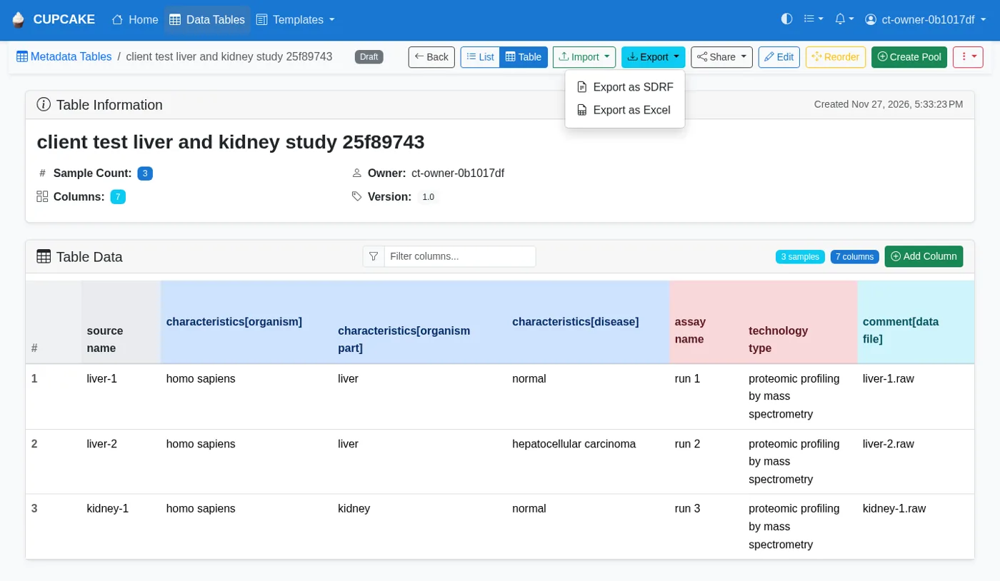

Importing
Import on a table offers:
- Import SDRF File: reads the samples and columns of an SDRF file into the table. Override count uses the file's number of samples instead of the table's, and Apply schema adds the columns of the SDRF schema the file declares.
- Import Excel Template: reads a table exported with Export as Excel and filled in.
- Import / Override Columns: maps the columns of an SDRF, Excel or CSV file onto the table's columns, by name, by position or by hand, shows every change before it is made, and creates the columns the table does not have.
To fill a new table from an SDRF file:
-
Open the table and choose Import, then Import SDRF File.

-
Choose the file and confirm.

-
The table now holds the file's samples and columns.

Exporting
Export writes the table as an SDRF file, or as an Excel workbook that can be filled in and imported again. The Excel export can include the value recommendations of your lab groups and a sheet for the sample pools.

Open in Excel gives a code that the Cupcake Vanilla add-in for Excel opens the table with: in Excel, open the add-in, choose Use Launch Code and enter the code.
Validating
Validate checks a table against the SDRF format and the schemas you choose: the required columns, the column headers and the values. Skip Ontology Validation is faster but does not look up ontology terms, and Include Sample Pools checks the pools too. Errors must be fixed before the table is valid SDRF; warnings point at possible problems.